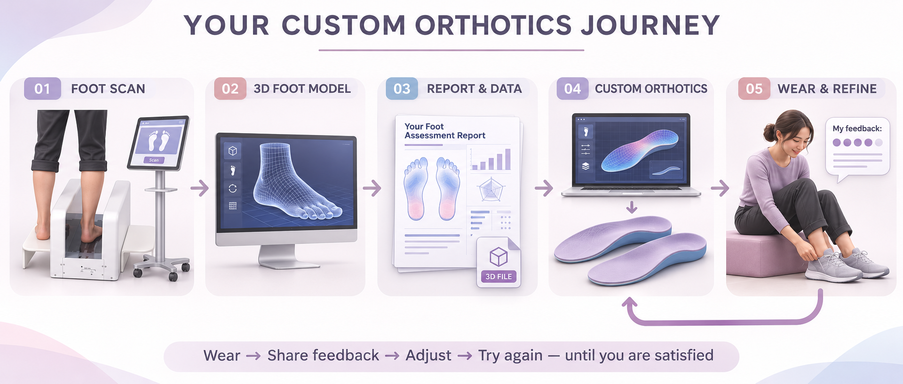

Every step. Made for you.
Your foot data starts the journey. Your satisfaction shapes the result. We scan your feet, create your 3D files, and give you your personal foot assessment report and data. Our automated system then designs your custom orthotics, with ongoing adjustments guided by your wearing experience.
01. Scan your feet
Step barefoot onto our scanning device to capture the three-dimensional shape of your feet. This scan provides the foundation for your model, assessment, and custom insole design.
02. Create your 3D foot files
Your scan becomes a personal 3D foot model, recording the contours and arch shape of your feet. These digital files give our system a precise reference for your custom design.
03. Receive your report & data
You receive your foot assessment report and personal foot data, so you can understand your foot profile and retain the information behind your custom orthotics.
04. Automatically designed. Individually made.
Our automated generation system uses your 3D model and assessment data to create a personalized orthotic insole design. We then turn that design into custom orthotics shaped for your feet.
05. Wear, share feedback & refine
Delivery is part of the journey. Wear your insoles in daily life and tell us how they feel. We use your feedback to adjust them, then invite you to try again, continuing until you are satisfied.
- Wear. Notice the fit, arch support, and overall comfort in your usual shoes and activities.
- Share & adjust. Tell us where you feel discomfort and what you would like improved, so we can refine your insoles.
- Try again. Check how the adjusted insoles feel. We repeat the feedback and refinement cycle as needed.
Wear → Share feedback → Adjust → Try again — until you are satisfied.